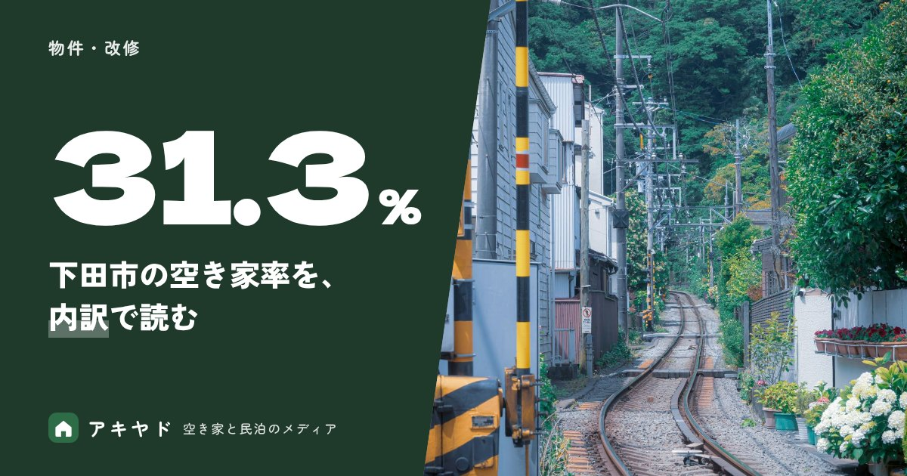

空き家率が高い地域は宿に向く？下田市の空き家率31.3%を内訳で読む
公開日
更新日
読了目安 約8分
執筆：アキヤド編集部
監修：石原 佑真

空き家率が高い地域は宿に向くのか。住宅・土地統計調査の取得値から、空き家率が下田市31.3%・静岡県16.7%・全国13.8%を内訳で比べ、計算式つきで読み方を整理します。宿の需要を見る統計と、自分の市町村の調べ方も紹介します。
この記事のポイント
- 空き家率は「空き家数 ÷ 総住宅数」で求めます。住宅の余り具合を表す数字で、宿泊の需要は表しません。
- 下田市の空き家率は31.3%で、全国13.8%の約2.3倍です。内訳は、賃貸用が低く、二次的住宅と「賃貸・売却用及び二次的住宅を除く空き家」が高めです。
- 宿の需要は、別の統計で確かめます。静岡県の外国人延べ宿泊者の割合は、2021年度0.6%から2024年度8.7%に上がりました（e-Stat に収録された静岡県の集計値で、観光庁の全体集計とは対象の範囲が異なる可能性があります）。
- 自分の市町村の数字は、e-Stat の表と本文の式で調べられます。
空き家率とは、何を表す数字なのか？
空き家率とは、総住宅数のうち空き家が占める割合のことで、「空き家数 ÷ 総住宅数」で求めます。調査時点の住宅の余り具合を表す数字で、その家がどう使われているか、需要があるかまでは表しません。
出典は、総務省「令和5年住宅・土地統計調査」（調査時点は2023年10月1日、e-Stat 統計表ID 0004021421）です。全国の数字は日本の空き家は約900万戸で扱っているため、この記事は市区町村の内訳の読み方に絞ります。
読む前の注意
この調査は標本調査で、数値は推計値です。端数が丸められているため、内訳を足しても総数と合わないことがあります。
下田市の空き家率31.3%は、全国の何倍なのか？
下田市の空き家率は31.3%で、全国の13.8%の約2.3倍です。静岡県は16.7%で、下田市はその約1.9倍にあたります。
取得した数値からの計算は、次のとおりです。
倍率は、31.3 ÷ 13.8 = 2.27（約2.3倍）です。数字は令和5年住宅・土地統計調査（総務省、2023年10月1日時点）の取得値で、割合は取得した数値からの計算です。同じ「空き家」でも中身が違うかどうかは、次の節で内訳を見ます。
空き家の中身は、地域でどう違うのか？
同じ空き家率でも、内訳は地域で違います。下田市は賃貸用の割合が低く、二次的住宅（別荘など）と「賃貸・売却用及び二次的住宅を除く空き家」の割合が高い結果でした。
調査では、空き家が4つの区分に分かれています。賃貸用、売却用、二次的住宅（別荘など）、賃貸・売却用及び二次的住宅を除く空き家です。区分名は調査の名前のとおりに書いており、中身の定義は総務省統計局の用語の説明で確認してください。
各区分を空き家全体で割った割合は、次のとおりです（取得した数値からの計算。小数第2位を四捨五入）。
下田市では、賃貸用の空き家は全国の49.3%に対して29.5%と低めです。一方で、二次的住宅は20.4%、「賃貸・売却用及び二次的住宅を除く空き家」は48.2%と、どちらも全国より高くなっています。
表の計算式（戸数 ÷ 空き家数）を見る
- 賃貸用：全国 4,435,800 ÷ 9,001,600、静岡県 144,400 ÷ 296,300、下田市 1,230 ÷ 4,170
- 売却用：全国 326,200 ÷ 9,001,600、静岡県 8,400 ÷ 296,300、下田市 80 ÷ 4,170
- 二次的住宅：全国 383,500 ÷ 9,001,600、静岡県 38,500 ÷ 296,300、下田市 850 ÷ 4,170
- 賃貸・売却用及び二次的住宅を除く空き家：全国 3,856,000 ÷ 9,001,600、静岡県 104,800 ÷ 296,300、下田市 2,010 ÷ 4,170
出典は令和5年住宅・土地統計調査（総務省）の表1-2-1です。内訳4区分の合計は、全国で9,001,500戸（総数との差100戸）、静岡県で296,100戸（差200戸）、下田市で4,170戸（差0戸）でした。標本調査の推計値を丸めているためで、足し算が合わないことがあります。
「賃貸・売却用及び二次的住宅を除く空き家」は、住宅全体のどれくらいなのか？
住宅全体で見ると、この区分は全国と静岡県が5.9%、下田市が15.1%です。空き家の中での割合より、差がはっきり表れます。
取得した数値からの計算は、次のとおりです（各戸数 ÷ 総住宅数）。
この表の計算式を見る
- 賃貸・売却用及び二次的住宅を除く空き家：全国 3,856,000 ÷ 65,046,700、静岡県 104,800 ÷ 1,774,100、下田市 2,010 ÷ 13,330
- 二次的住宅：全国 383,500 ÷ 65,046,700、静岡県 38,500 ÷ 1,774,100、下田市 850 ÷ 13,330
分かるのは、住宅全体のなかで、使われ方が賃貸・売却・別荘のいずれにも当たらない空き家の比重が、下田市では高いということまでです。建物の状態や、宿などに活用できるかどうかは、この数字からは分かりません。
物件ごとの見極めは、民泊に向く空き家かを確かめる記事で整理しています。
空き家率が高ければ、宿の需要もあるのか？
空き家率だけでは、宿の需要があるとは言えません。空き家率は住宅の余り具合、つまり供給側の数字で、泊まりたい人がどれだけいるかは別の統計で見るためです。
空き家の数字（2023年10月1日時点の住宅・土地統計調査）と、宿泊の数字（年度ごとの宿泊旅行統計調査）は、調べている対象も時点も単位も違います。並べて原因と結果のように読むことはできません。
一方で、空き家率が高い町は、使える建物が地域にある可能性がある、という見方はできます。ただし、宿として成り立つかは、ターゲットと物件の条件、需要を確かめて初めて判断できます。
使い道を比べるときは、空き家の活用方法を比べる記事が参考になります。持ち続ける間の負担は、空き家を持ち続けるお金の記事で確認できます。
宿の需要は、どの数字で確かめればよいのか？
宿の需要は、宿泊旅行統計調査のような宿泊の統計で確かめます。e-Stat に収録された静岡県の集計値では、外国人の延べ宿泊者が占める割合は、2021年度の0.6%から2024年度の8.7%に上がりました。観光庁の全体集計とは対象の範囲が異なる可能性があるため、傾向を見る目安としてお使いください。
出典は、観光庁「宿泊旅行統計調査」（総務省「社会・人口統計体系」収録値、e-Stat 統計表ID 0000010107）です。外国人の割合は、外国人延べ宿泊者数 ÷ 延べ宿泊者数で求めました（取得した数値からの計算）。
この数字を読むときの注意が三つあります。
- 静岡県の集計値で、下田市の値ではありません。市区町村の需要は、この表からは分かりません。
- 人泊の数が、観光庁が公表する全体の集計と一致しませんでした。範囲の詳細は確認できていないため、絶対数は載せず、割合と推移だけを使います。
- 年の表記は、表のとおり「年度」です。
訪日客が地方に広がる動きは、訪日客の地方分散の記事で扱っています。観光地ではない場所の空き家が宿になるかは、焼津市の空き家の記事も参考になります。
下田市で、私たちはどう宿を始めたのか？
私たち創業メンバーは、下田市で賃貸物件を改修して宿を始めました。
開業したのは、他者が所有する賃貸物件を改修した宿です。ターゲットは、欧米を中心とした外国人の長期滞在者に絞りました。
物件を借りたため、物件の取得費はかかりませんでした。個人事業として始めたもので、会社の設立より前のことです。
開業までの流れと最初の1年の数字は、賃貸の一軒家を宿にした1年目の記事にまとめています。この記事の統計と私たちの開業の経験は、別のものとして読んでください。
自分の市町村の数字は、どう調べて何を決めればよいのか？
自分の市町村の数字は、e-Stat の住宅・土地統計調査（表1-2-1、統計表ID 0004021421）で調べられます。そのうえで、物件の適性と使い道を確かめ、決めていきます。
手順は次のとおりです。
- e-Stat で、令和5年住宅・土地統計調査の表1-2-1を開き、市区町村の総住宅数と空き家数を見ます。
- 「空き家数 ÷ 総住宅数」で空き家率を出します。内訳が必要な場合は、区分ごとの戸数を空き家数で割ります。
- 標本調査の推計値で、誤差や端数の丸めがあること、調査時点が2023年10月1日であることを頭に置きます。
- 宿の需要は、自治体や観光庁の公表資料と、現地の宿泊施設の状況で別に確かめます。
- 物件の適性は民泊に向く空き家か、使い道の比較は空き家の活用方法で確かめます。
読者の状況別の流れは、空き家を活かしたい方へのガイドにあります。ほかの記事は物件・改修のカテゴリから探せます。
RIVIA&CO.の空き家再生事業では、空き家の借り上げや買取、運営のご相談を受けています。建物の状態や立地によって対応できるかは変わるため、「うちの空き家でもできるのか」という段階から、お気軽にご相談ください。相談・お見積りは無料です。
まとめ：空き家率は「余り具合」。宿の需要は別の数字で確かめる
空き家率は、空き家数 ÷ 総住宅数で求める、住宅の余り具合の数字です。下田市の31.3%は全国13.8%の約2.3倍ですが、内訳を見ると、賃貸用が少なく、二次的住宅と「賃貸・売却用及び二次的住宅を除く空き家」が多いという違いがあります。
宿の需要は、空き家率ではなく宿泊の統計と現地で確かめます。
本記事の統計の数値は、2026年10月11日に取得した資料にもとづきます。計算した割合は取得した数値からの計算で、公表値ではありません。制度や税、補助の最終判断は、窓口や専門家にご確認ください。
よくある質問
Q空き家率はどうやって計算しますか？
A空き家数 ÷ 総住宅数で求めます。たとえば下田市は、4,170戸 ÷ 13,330戸 = 31.3%です（令和5年住宅・土地統計調査、2023年10月1日時点）。
Q空き家率が高いと、宿には向いていますか？
A空き家率だけでは言えません。住宅の余り具合を表す数字で、宿泊の需要は表さないためです。需要は宿泊旅行統計調査などの別の統計と、現地の状況で確かめてください。
Q「賃貸・売却用及び二次的住宅を除く空き家」とは何ですか？
A調査の区分の名前で、この記事では列名のとおりに書いています。中身の定義は、総務省統計局の用語の説明で確認してください。下田市は空き家の48.2%（2,010 ÷ 4,170）、全国は42.8%でした。物件ごとの状態や活用できるかは、この数字からは分かりません。
Q自分の市町村の空き家率はどこで調べられますか？
Ae-Stat の住宅・土地統計調査、表1-2-1（統計表ID 0004021421）で、市区町村別に見られます。総住宅数と空き家数から、本文の式で計算してください。標本調査の推計値で、端数の丸めがあります。
Q外国人宿泊者の割合は、市町村ごとに分かりますか？
Aこの記事で使った表は都道府県単位（e-Stat に収録された静岡県の集計値）で、市区町村の割合は示せません。市区町村の需要は、自治体や観光庁の公表資料、現地の宿泊施設の状況で確かめてください。
参考資料
- 総務省「令和5年住宅・土地統計調査 住宅及び世帯に関する基本集計 表1-2-1」（調査年2023年、公開日2024年9月25日、2026年10月11日取得）
- 総務省「社会・人口統計体系 都道府県データ 基礎データ Ｇ 文化・スポーツ」（公開日2026年2月20日、収録値は2020〜2024年度、2026年10月11日取得）
- 観光庁「宿泊旅行統計調査」（原典。総務省「社会・人口統計体系」〈e-Stat〉に収録された2020〜2024年度の値を参照）
※ 本記事の数値・制度は公開日時点で公表されている資料にもとづきます。最新の情報は各機関の発表をご確認ください。